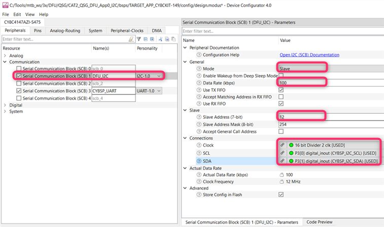
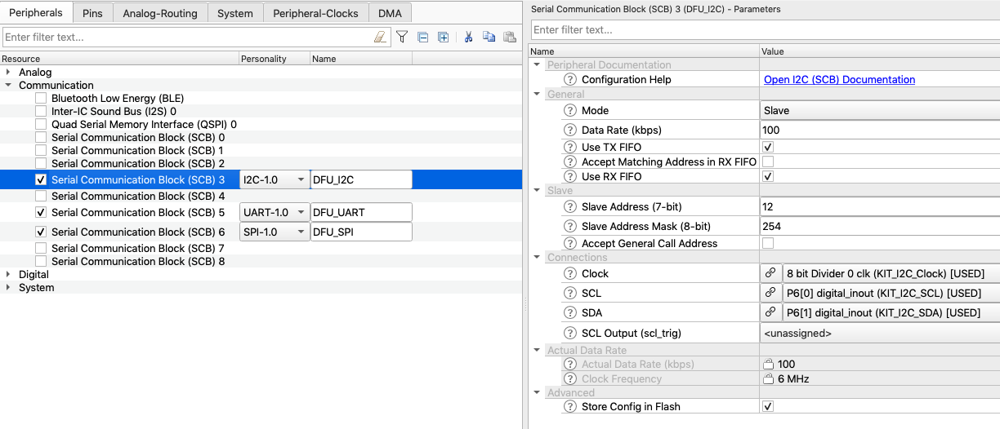
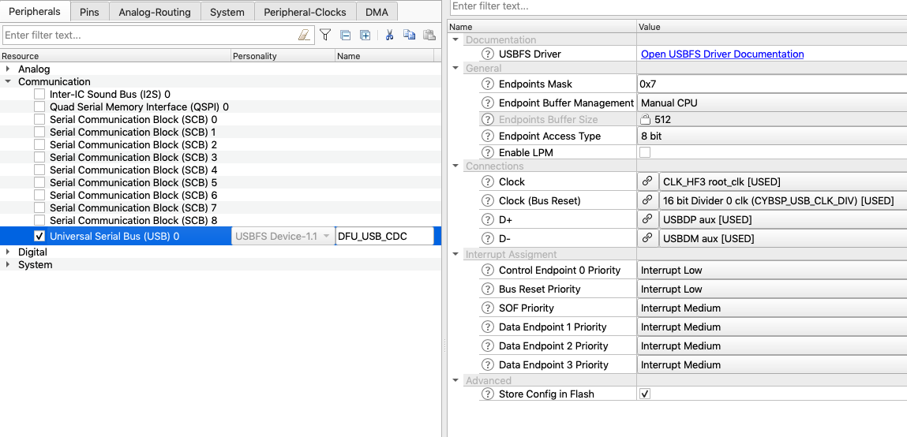

Overview
The purpose of the DFU middleware library is to provide an SDK for updating firmware images. The middleware allows creating these types of projects:
- The application loader receives the program and switch to the new application.
- A loadable application is transferred and programmed.
A project can contain the features of both types.
General Description
Include cy_dfu.h to get access to all functions and other declarations in this library.
The DFU SDK has the following features:
- Reads firmware images from a host through a number of transport interfaces, e.g. USB, UART, I2C, SPI
- Supports dynamic switching (during runtime) of the communication interfaces
- Provides ready-for-use transport interface templates based on HAL drivers for CAT1 devices and PDL drivers for CAT2 devices
- Supported flows: Basic bootloader and MCUBoot compatibility
- Device support: CAT1A, CAT2 (Basic bootloader flow), CAT1C (MCUBoot compatibility flow)
- Programs a firmware image to the specified address in internal flash, XIP region or any external memory that supports the DFU API
- Copies applications
- Validates applications
- Updates safely - updates at a temporary location, validates, and if valid, overwrites the working image
- Switches applications - passes parameters in RAM when switching applications
- Supports encrypted image files - transfers encrypted images without decrypting in the middle
- Supports many application images - the number of applications is limited only by the metadata size; each image can be an application loader, for example, 512-byte metadata supports up to 63 applications
- Supports customization
- Supports the CRC-32 checksum to validate data.
- Supports extend of the host command/response protocol with custom commands.
Quick Start Guide
Basic Bootloader Flow
The DFU SDK is used to design updating applications of arbitrary flexibility and complexity. Infineon DFU middleware can be used in various software environments. For details, refer to RELEASE.md file. For a quick start, use the Code Examples. The portfolio of Code Examples continuously extends at Infineon GitHub.
The ModusToolbox(TM) Quick Start Guide (QSG) assumes ModusToolbox(TM) 3.x is installed with all required tools.
The following steps are to set up and build a basic DFU loader and loadable applications. The DFU loader application uses the I2C transport interface. The steps assume that the user builds an application for CY8CKIT-062-WIFI-BT (CAT1A device) or CY8CKIT-149 kits (CAT2 device) based on a starter Hello_World ModusToolbox(TM) project.
- Note
- For other kits or devices, update default linker scripts with the valid memory addresses. For details, refer to Linker scripts.
STEP 0: Projects preparation
- Create a project for CY8CKIT-062-WIFI-BT or CY8CKIT-149 with the DFU loader application using the Hello_World template application ("Getting started" section in the Project Creator). Name it "QSG_DFU_App0_I2C". For details, refer to the ModusToolbox(TM) 3.x IDE Quick Start Guide.
- Create a project for the DFU loadable application in the same way and name it "QSG_DFU_App1_Hello_World".
- Include the DFU middleware into each project using the ModusToolbox(TM) Library Manager or download it from GitHub and copy it to the project manually.
- Include a DFU header in main.c of each project to get access to DFU API:
STEP 1: Setup Loader Application QSG_DFU_App0_I2C
Copy the app0 linker script files and put them next to main.c:
- For CY8CKIT-062-WIFI-BT kit:
[DFU location]\linker_scripts\CAT1A\TOOLCHAIN_<COMPILER>\dfu_cm4_app0.[ext]
- For CY8CKIT-149 kit:
[DFU location]\linker_scripts\CAT2\TOOLCHAIN_<COMPILER>\dfu_cm0p_app0.[ext]
[DFU location] - The folder with the DFU library downloaded in STEP 0
[ext] - The linker script extension according to the used compiler.
For example, for CY8CKIT-062-WIFI-BT kit and GCC ARM compiler, with DFU loaded by the Library Manager as a "Shared Git Repo" copy
..\mtb_shared\dfu\[VERSION]\linker_scripts\CAT1A\TOOLCHAIN_GCC_ARM\dfu_cm4_app0.ld file
- Note
- For ARM compiler, copy additional dfu_common.h and dfu_elf_symbols.c files to the project. Those files are located in the same folder as the selected linker file.
- Update project's Makefile to add DFU user and I2C transport components : locate the COMPONENTS variable and add DFU_USER and DFU_I2C:
COMPONENTS=DFU_USER DFU_I2C
For CY8CKIT-149 kit, configure the I2C communication interface.
- Warning
- Not needed for the CAT1 devices - configuration is done by HAL.
Please check/setup the required pins assignments in the BSP.
Open the ModusToolbox(TM) Device Configurator and enable SCB on the Peripheral tab under Communication section with the following parameter.
For CY8CKIT-149, SCB 1 is connected to the KitProg.
| SCB parameter name | Value |
| Personality | I2C |
| Name | DFU_I2C |
| Mode | Slave |
| Data Rate (kbps) | 100 |
| Slave Address (7-bit) | 12 |
- Warning
- The SCB personality must be I2C and the name must be DFU_I2C.

See Use of the ModusToolbox(TM) tools for HW initialization
STEP 2: Update Loader QSG_DFU_App0_I2C main.c
- Include a DFU reset handler to start the appropriate application after a reset:
void Cy_OnResetUser(void)
{
#if CY_DFU_FLOW == CY_DFU_BASIC_FLOW
#endif
}
- Initialize the variables and call the DFU initialization function:
uint32_t count = 0;
uint32_t state;
const uint32_t paramsTimeout = 20u;
dfuParams.timeout = paramsTimeout;
dfuParams.dataBuffer = &buffer[0];
dfuParams.packetBuffer = &packet[0];
init_cycfg_all();
__enable_irq();
- Initialize the DFU transport layer:
- Update the main loop with the Host Command/Response protocol processing:
++count;
{
{
}
{
}
}
{
}
{
uint32_t passed5seconds = (count >= (5000ul/paramsTimeout)) ? 1u : 0u;
{
count = 0u;
}
{
if (passed5seconds != 0u)
{
count = 0u;
}
}
else
{
count = 0u;
Cy_SysLib_Delay(paramsTimeout);
}
}
- Warning
- An additional timeout in the main loop can break the DFU transfer. For example, CY8CKIT-149 Hello_World template application uses the 0.5 seconds delay for the LED blinking. This needs to be disabled during the DFU image transfer.
Update the main loop with a routine to switch to the loaded QSG_DFU_App1_Hello_World application:
For example, to switch by pressing the kit user button using HAL drivers:
- Add pin initialization to the main() function initialization section:
cyhal_gpio_init(CYBSP_USER_BTN, CYHAL_GPIO_DIR_INPUT, CYHAL_GPIO_DRIVE_PULLUP, CYBSP_BTN_OFF);
- Add the following routine to the main loop section:
if (cyhal_gpio_read(CYBSP_USER_BTN) == CYBSP_BTN_PRESSED)
{
cyhal_system_delay_ms(50u);
if (cyhal_gpio_read(CYBSP_USER_BTN) == CYBSP_BTN_PRESSED)
{
while (cyhal_gpio_read(CYBSP_USER_BTN) == CYBSP_BTN_PRESSED)
{
cyhal_system_delay_ms(50u);
}
{
}
}
}
- Note
- For the CAT2 device, to use HAL drivers add mtb-hal-cat2 library in the Library Manager add the CY_USING_HAL define to the Makefile: include cyhal.h in the main.c
STEP 3: Build and Program Loader QSG_DFU_App0_I2C
- Update the project Makefile to use the previously copied DFU linker script by setting the LINKER_SCRIPT variable.
- CY8CKIT-062-WIFI-BT + GCC_ARM:
LINKER_SCRIPT=dfu_cm4_app0.ld
- CY8CKIT-149 + GCC_ARM:
LINKER_SCRIPT=dfu_cm0p_app0.ld
- Connect your kit to the computer. Build and program the device.
- Warning
- The DFU loader application requires an XRES reset after programming to initialize the ram_common data section.
- Observe the kit LED blinking.
STEP 4: Setup Loadable QSG_DFU_App1_Hello_World
- Copy the app1 linker script file and put them next to main.c. The linker script files are located at:
- CY8CKIT-062-WIFI-BT kit:
[[dfu location]]\[VERSION]\linker_scripts\CAT1A\TOOLCHAIN_<COMPILER>\dfu_cm4_app1.[ext]
- CY8CKIT-149 kit:
[[dfu location]]\[VERSION]\linker_scripts\CAT2\TOOLCHAIN_<COMPILER>\dfu_cm0p_app1.[ext] For the GCC ARM compiler, copy dfu_cm4_app0.ld (CY8CKIT-062-WIFI-BT kit) of dfu_cm0p_app0.ld file (CY8CKIT-149 kit). - Note
- For the ARM compiler, copy additional dfu_common.h and dfu_elf_symbols.c files to the project. Those files are located in the same folder as the selected linker file.
STEP 5: Update Loadable QSG_DFU_App1_Hello_World main.c
- Update the main.c file with the .cy_app_signature section
CY_SECTION(".cy_app_signature") __USED static const uint32_t cy_dfu_appSignature[1];
STEP 6: Build and Program Patch
- Update the project Makefile to use the previously copied DFU linker script by setting the LINKER_SCRIPT variable.
- CY8CKIT-062-WIFI-BT + GCC_ARM:
LINKER_SCRIPT=dfu_cm4_app1.ld
- CY8CKIT-149 + GCC_ARM:
LINKER_SCRIPT=dfu_cm0p_app1.ld
Add the post build step to run CyMCUElfTool to generate a patch file in the *.cyacd2 format (see CyMCUElfTool User Guide):
- Update the application ELF with a CRC checksum: <MCUELFTOOL> –sign app.elf CRC –output app_crc.elf
- Generate a patch file: <MCUELFTOOL> -P app_crc.elf –output app.cyacd2
Generate a *.cyacd2 file in the project root.
# Path to Elf tool directory.
CY_MCUELFTOOL_DIR=$(wildcard $(CY_TOOLS_DIR)/cymcuelftool-*)
# CY MCU ELF tool executable path.
ifeq ($(OS),Windows_NT)
CY_MCUELFTOOL=$(CY_MCUELFTOOL_DIR)/bin/cymcuelftool.exe
else
CY_MCUELFTOOL=$(CY_MCUELFTOOL_DIR)/bin/cymcuelftool
endif
BINARY_PATH=./build/$(TARGET)/$(CONFIG)/$(APPNAME)
# Custom post-build commands to run.
POSTBUILD="$(CY_MCUELFTOOL)" --sign $(BINARY_PATH).elf \
CRC --output $(APPNAME)_crc.elf && \
"$(CY_MCUELFTOOL)" -P $(APPNAME)_crc.elf --output $(APPNAME)_crc.cyacd2
- Build a project.
- Open the DFU Host Tool. Connect to the device. Select the generated .cyacd2 in the project root and program it to the device.
- QSG_DFU_App1_Hello_World application will start after successful programming. Observe the LED blinking and UART output.
- Update the QSG_DFU_App1_Hello_World application (e.g. change blinking led frequency or UART output) and build it.
- Press the kit reset button to return to the loader application and program the updated QSG_DFU_App1_Hello_World. Observe the project updated behavior.
- Note
- The current application can be changed from the firmware by calling the Cy_DFU_ExecuteApp function.
DFU Transport (MCUBoot compatible) flow
Description
The DFU supports the usage of the MCUBoot as a bootloader and provides a transport layer for transferring a new application image to the slot. Set macro CY_DFU_FLOW to CY_DFU_MCUBOOT_FLOW to enable this flow.
STEP1: Projects preparation.
- Create a ModusToolbox(TM) application for the CAT1A or CAT1C devices. For example, the CY8CKIT-062-WIFI-BT kit can be used as CAT1A or KIT_XMC72_EVK as CAT1C. Create a new application in the ModusToolbox(TM) IDE using an appropriate BSP and an empty application as a template (Empty App). Name it "DFU_App0". For details, refer to the ModusToolbox(TM) 3.x IDE Quick Start Guide.
- Include the DFU middleware into the project using the ModusToolbox(TM) Library Manager.
- Add the DFU transport components to project's Makefile to enable the transport interface(s). In our case, I2C is used:
- Update project's Makefile to use MCUBoot flow:
STEP2: Add DFU logic to main.c
- Include the required headers.
- Initialize the variables and call the DFU initialization function:
uint32_t count = 0;
uint32_t state;
const uint32_t paramsTimeout = 20u;
dfuParams.timeout = paramsTimeout;
dfuParams.dataBuffer = &buffer[0];
dfuParams.packetBuffer = &packet[0];
init_cycfg_all();
__enable_irq();
- Initialize the DFU transport layer:
- Update the main loop with the Host Command/Response protocol processing:
++count;
{
{
}
{
}
}
{
}
{
bool passed5seconds = count >= (5000UL/paramsTimeout);
{
count = 0u;
}
{
if (passed5seconds != 0u)
{
count = 0u;
}
}
else
{
count = 0u;
Cy_SysLib_Delay(paramsTimeout);
}
}
STEP3: Build and Program Loader DFU_App0
Connect your kit to the computer. Build and program the device.
- Note
- The CY_DFU_PRODUCT warning displays if default values are used and they need to be changed. CY_DFU_PRODUCT can be defined in the Makefile.
STEP4: Create a loadable application (Application 1).
- Create a ModusToolbox(TM) application for the same devices as in STEP1. Use an empty application as a template (Empty App). Name it "DFU_App1".
- Disable the adding the CM0+ core code to the result binary. For the CAT1A device (CY8CKIT-062-WIFI-BT kit), disable the CM0P_SLEEP component in Makefile.
DISABLE_COMPONENTS=CM0P_SLEEP
DISABLE_COMPONENTS=XMC7xDUAL_CM0P_SLEEP
- Update the project post build steps to generate HEX files with an offset to the memory region of the loadable application.
- Added Makefile variables for generating the HEX file.
BINARY_PATH=./build/$(TARGET)/$(CONFIG)/$(APPNAME)
HEX_TOOL=$(MTB_TOOLCHAIN_GCC_ARM__BASE_DIR)/bin/arm-none-eabi-objcopy
HEX_TOOL_OPTIONS=-O ihex
APP_OFFSET=0x00030000
- Add a post build step to put the loadable application at the upgradable area offset
# Custom post-build commands to run.
POSTBUILD=\
cp -f $(BINARY_PATH).hex $(BINARY_PATH)_raw.hex;\
rm -f $(BINARY_PATH).hex;\
$(HEX_TOOL) --change-addresses=$(APP_OFFSET) $(HEX_TOOL_OPTIONS) $(BINARY_PATH).elf $(BINARY_PATH).hex;
- Load the application to the device using the DFU Host Tool. Refer to the DFU Host Tool user guide for the details of using the HEX file as an input.
- Note
- Only DFU Host Tool v2.0 or later support the HEX file as an input.
Configuration Considerations
Linker scripts
The DFU SDK projects linker scripts differ from the default startup linker scripts.
The DFU middleware contains two sets of linker script files for the CAT1A and CAT2-based devices. The DFU linker scripts include the following files:
- CAT1A:
- dfu_cm4_app0.{ld, icf, scat}, dfu_cm4_app1.{ld, icf, scat} for ARM GCC, IAR, and ARM compilers.
- dfu_common.h and dfu_elf_symbols.c for the ARM compiler.
- CAT2:
- dfu_cm0p_app0.{ld, icf, scat}, dfu_cm0p_app1.{ld, icf, scat} for ARM GCC, IAR, and ARM compilers.
- dfu_common.h and dfu_elf_symbols.c for the ARM compiler.
These files define the symbols for the memory layout for each application inside the device.
- Memory layout of GCC_ARM linker scripts (dfu_{cm0p, cm4}_{app0, app1}.ld)
This part of the GCC linker script files must have the same memory layout across all the application projects in the designed device. Any changes made to any application must be copied to other applications linker script files.
Memory regions:
- flash_app{X} - Code and data of the user application {X}.
- flash_boot_meta - For the DFU SDK metadata. Cypress DFU SDK code examples place DFU SDK metadata inside this region.
- ram_common - Shared between the DFU SDK applications. The user can place it anywhere inside the RAM, So, one app sets some values there, switches to another app. Then app may read or update the values.
- ram_app{X} - data, stack, heap etc. for the user app{X}.
Also, the linker script files for CAT1A include the following memory regions:
- flash_cm0p - Code and data of the default application CM0+ CPU.
- Warning
- There are different CM0+ images available. Please adjust the size of the CM0+ application image according to the size in BSP default linker script.
- sflash_user_data, eFuse, flash_toc, em_eeprom, xip - These regions are not used by typical DFU SDK code examples. They are kept because they may be used in user code.
ELF file symbols: CyMCUElfTool uses special ELF file symbols besides the command-line arguments for its configuration. These symbols are defined in each linker script.
__cy_memory_{N}_start - Defines the start address of the memory region. __cy_memory_{N}_length - Defines the length of the memory region. __cy_memory_{N}_row_size - Defines the row size of the memory region.
CyMCUElfTool uses these symbols to determine which memory regions to place into the output files. I.e. without these symbols, some data, like XIP may be absent in the output file. These symbols are critical for the .cyacd2 file generation, CyMCUElfTool must know the row size of all the data being exported to the .cyacd2 file. The updating is done by rows, and a row size may vary across the memory regions.
E.g. The internal flash of PSoC6 devices start at address 0x1000_0000 and the length and row size may be device-dependent. For example, if the length and size are 512KB and 512 bytes, the memory symbols for the internal flash will be:
__cy_memory_0_start = 0x10000000;
__cy_memory_0_length = 512 * 1024;
__cy_memory_0_row_size = 512;
The number _{N}_ in the memory symbol indicates that there may be multiple memories.
- __cy_boot_metadata_addr and __cy_boot_metadata_length. These symbols are used by the DFU SDK internally to access the metadata.
__cy_product_id - used by CyMCUElfTool to be placed in the .cyacd2 header. This value is used by the updating Host and DFU SDK firmware to confirm that the .cyacd2 file being updated is compatible with the device.
E.g. The user may have two different devices with the same PSoC6 chip:
- A coffee machine, with Product ID - 0x1000_0001.
- A nuclear power plant control device with Product ID - 0x1000_0002. The user of a coffee machine tries to update firmware for a nuclear power plant control device, and the DFU Host will indicate that the device rejected this firmware because of the wrong Product ID.
__cy_app{N}_verify_start, __cy_app{N}_verify_length. These symbols are used by the dfu_user.c file to initialize the metadata. Their value is automatically updated by the linker when the user updates the memory layout (memory regions).
If the user decides to use a different mechanism for the SDK metadata initialization, these symbols can be removed.
- __cy_boot_signature_size. Used by the DFU SDK linker scripts only. It helps avoiding the magic number for a signature size to be scattered throughout all the linker scripts. E.g.
- For the CRC-32C application signature, the value of this symbol is 4 (bytes).
- For RSASSA-PCKS-1-v1.5 with RSA 2048, the value is 256 (bytes).
- __cy_checksum_type. The checksum type for the DFU transport packet verification used by CyMCUElfTool to generate a updating file. Must be aligned with CY_DFU_OPT_PACKET_CRC
- File dfu_{cm0p, cm4}_app0.ld
This file is a linker script for the app0 for DFU SDK applications.
It is similar to the default startup GCC's linker script but contains the following changes:
- The memory regions are separated between the CPU application 0 and CPU application 1 described above. For CAT1A devices, there is an additional region for the CM0+ application.
- The DFU-specific ELF file symbols are described above.
- __cy_app_id. These ELF file symbols are used by CyMCUElfTool to set an application ID in the .cyacd2 file header.
- __cy_app_verify_start, __cy_app_verify_length. These two symbols are used by CyMCUElfTool to generate an application signature. The first symbol provides a value of the start of signed memory and the second - the length of signed memory.
- Section ".cy_boot_noinit". Used to place data to share between the applications. See the description of the ram_common memory region.
- Section ".cy_boot_metadata". Contains the DFU SDK metadata. This section name is necessary only for CyMCUElfTool to sign the section with the CRC-32C checksum of this section data. If no CRC-32C at the end of the metadata is required, the section can be renamed.
- Section .cy_app_signature. This section is used to place an application signature. The signature is used by the DFU SDK to verify that the application is valid. Typically, CRC, SHA or any other hash of the application code and data is placed here. CyMCUElfTool updates this section in the post-build step. The memory for which the signature is calculated is defined by the following ELF file symbols: __cy_app_verify_start, __cy_app_verify_length.
- File dfu_{cm0p, cm4}_app1.ld
Used to create linker scripts for application #2, .. #N It is similar to dfu_{cm0p, cm4}_app0.ld linker script, but contains the following changes:
- Region alias for flash and ram are flash_app1 and ram_app1
- Application ID __cy_app_id = 1
- For CAT1A devices, removed section for CM0+ CPU as it is allocated only once in scope of the linker script dfu_cm4_app0.ld
- Files dfu_{cm0p, cm4}_{app0, app1}.{icf, scat}
These files are the linker scripts for the IAR and ARM compilers for the DFU SDK applications.
Their difference from the default startup linker scripts is similar to the DFU SDK GCC's linker scripts described above.
Use of the ModusToolbox(TM) tools for HW initialization
The following section describes the communication interfaces settings in the Device Configurator required to use the included with DFU middleware communication files with the DFU Host tool.
- Warning
- The ModusToolbox(TM) Device Configurator is not used for templates based on the HAL drivers.
Please check/setup the required pins assignments in the BSP.
- I2C
| Parameter name | Value |
| Personality alias name | DFU_I2C |
| Mode | Slave |
| Data Rate | Any, I2C speed in DFU Host tool should be the same |
| Use TX FIFO | True |
| Use RX FIFO | True |
| Slave Address | Any, I2C address in DFU Host tool should be the same |

- SPI
| Parameter name | Value |
| Personality alias name | DFU_SPI |
| Mode | Slave |
| Sub Mode | Motorola |
| SCLK Mode | Any, Sub Mode in DFU Host tool should be the same |
| Data Rate | 1000 kbps (For other data rates, adjust the value of the SPI_BYTE_TO_BYTE macro in the transport_spi.c file) |
| Bit Order | Any, Shift direction in DFU Host tool should be the same |
| RX Data Width | 8 |
| TX Data Width | 8 |
| SS Polarity | Active Low |
- Note
- By default, used the Slave Select 1 line. To change it, update the CY_SPI_SLAVE_SELECT macro in transport_spi.c file.
- UART
| Parameter name | Value |
| Personality alias name | DFU_UART |
| Com Mode | Standard |
| Baud Rate | 115200 bps (For other baud rates, adjust the value of the UART_BYTE_TO_BYTE_TIMEOUT_US macro in transport_uart.c file) |
| Bit Order | LSB first |
| Data Width | 8 bits |
| Parity | Any, Parity in DFU Host tool should be the same |
| Stop Bits | Any, Stop Bits in DFU Host tool should be the same |
- USB CDC transports
- For a setup of the USB device personality in the ModusToolbox Device Configurator for the USB DFU transport for CY8CKIT-062-WIFI-BT, see the screenshots below. For other kits, verify the USB pins.

Design Considerations
Firmware Update via I2C
See Quick Start Guide for steps how to set up a DFU project that upgrades an application via the I2C transport interface.
Firmware Update via UART
See Quick Start Guide for basic steps how to setup a DFU project. Specific steps for the UART transport support:
- Add UART transport component in project's Makefile: locate COMPONENTS variable and add DFU_UART:
- For templates based on the PDL drivers:
- Select and configure the SCB block using the ModusToolbox(TM) Device Configurator see Use of the ModusToolbox(TM) tools for HW initialization or manually using the configuration structures.
- Adjust value of the UART_BYTE_TO_BYTE_TIMEOUT_US constant to align with UART speed in the transport_uart.c file.
- Adjust UART interrupt priority in the UART_INTR_PRIORITY in the transport_uart.c file.
- Build and program a project into the device.
- Open the DFU Host Tool. Select the UART interface. Set the UART baud rate according to the SCB UART setup in the previous step.
- Select the *.cyacd2 application image and upload to the device.
Firmware Update via SPI
See Quick Start Guide for basic steps how to set up a DFU project. The steps for the SPI transport support:
- Add SPI transport component in project's Makefile: locate COMPONENTS variable and add DFU_SPI:
- For templates based on the PDL drivers:
- Select and configure the SCB block using the ModusToolbox(TM) Device Configurator see Use of the ModusToolbox(TM) tools for HW initialization or manually using the configuration structures.
- Adjust value of the SPI_BYTE_TO_BYTE constant to align with SPI speed in the transport_spi.c file.
- Check the value of the CY_SPI_SLAVE_SELECT in the transport_spi.c file.
- Adjust SPI interrupt priority in the SPI_INTR_PRIORITY in the transport_spi.c file.
- Build and program a project into the device.
- Open the DFU Host Tool. Select the SPI interface. Set SPI mode, shift the direction and speed according to the SCB SPI setup in the previous step.
- Select the *.cyacd2 application image and upload to the device.
Firmware Update via USB CDC transport
See Quick Start Guide for basic steps how to setup a DFU project. Specific steps for the USB transport support:
- Add USB_CDC transport component in project's Makefile: locate COMPONENTS variable and add DFU_USB_CDC:
- Enable and configure the USB Device block using the ModusToolbox(TM) Device Configurator see Use of the ModusToolbox(TM) tools for HW initialization or manually using the configuration structures.
- Generate USB descriptors and USB Middleware structures using the USB Configurator. Open the USB configuration file (cycfg_usb_cdc.cyusbdev) in the DFU \export\config\COMPONENT_CAT1\COMPONENT_DFU_USB_CDC folder, then click Save to generate configuration files (cycfg_usbdev.c and cycfg_usbdev.h). These files must be included into the build flow (see USB Middleware API Reference More Information).
- Build and program a project into the device. Connect your Host to the USB device.
- For the USB CDC class: open the DFU Host Tool. Select the UART interface, because the Host recognizes the USB device as a virtual UART (the name is "DFU USB CDC transport"). UART settings: baud rate - 115200, data bits - 8, stop bits - 1, parity - None.
- Select the *.cyacd2 application image and upload to the device.
Firmware Update via emUSB CDC transport
Specific steps for the emUSB transport support:
- Add emUSB_CDC transport components to the project's Makefile:
COMPONENTS+=DFU_EMUSB_CDC
Change checksum types
DFU supports two types of checksums:
- transport packet checksum
- application image checksum.
For a packet, DFU supports 2 types of checksums: Basic summation and CRC-16CCITT. The basic summation checksum is computed by adding all the bytes (excluding the checksum) and then taking the 2's complement. CRC-16CCITT - the 16-bit CRC using the CCITT algorithm. The packet checksum type is selected with a macro CY_DFU_OPT_PACKET_CRC in dfu_user.h file: 0 - basic summation (default), 1 - for CRC-16.
For an application image, DFU supports 2 types of checksums: CRC-32 and SHA1. SHA1 is calculated with a crypto hardware block, which is available only on CAT1A devices. The default application checksum is CRC-32. The steps to set the SHA1 checksum for an application image:
- Set CY_DFU_OPT_CRYPTO_HW macro to 1 in dfu_user.h file to enable the SHA1 calculation.
- Symbol __cy_checksum_type = 0x01 in Linker scripts for each application for ARM GCC and IAR compiler. Set macro CY_CHECKSUM_TYPE to 1 in dfu_common.h for the ARM compiler.
- Symbol __cy_boot_signature_size = 20 in Linker scripts for each application for the ARM GCC and IAR compilers. Set macro CY_BOOT_SIGNATURE_SIZE to 20 in dfu_common.h for the ARM compiler.
- Configure and start crypto a server and crypto client (see PDL API Reference in More Information) in the loader application main routine.
- Allocate the ".cy_app_signature" section with a 20-byte array in the main of the loading application.
Multi-application DFU project
The DFU design does not limit the number of applications but it is limited by memory size and metadata size. The maximum size of DFU metadata is limited to the size of the flash row, because metadata should be in a single flash row. For example, the 512-byte metadata supports up to 63 applications. An arbitrary number of applications can be protected from overwriting. Such a protected application is called "Golden Image". See Quick Start Guide for a steps to setup basic 2 application DFU projects. The following steps show how to set up a 3rd application. The same approach can be used to setup 4th - Nth applications.
- Define the sizes for each of the three applications and define the start and size of each memory region (flash, RAM) for each application.
- Copy the linker script dfu_cm4_app1 from DFU linker_scripts folder according to the selected compiler and rename it (for example dfu_cm4_app2).
- Add flash and RAM sections to the 3rd application. Name them flash_app2, ram_app2.
- Update the size and start address for each section in each linker script based on the defined in the first step allocation.
- Set __cy_app_id symbol to 2
- Update the region aliases for flash and RAM to use flash_app2 and ram_app2 accordingly:
REGION_ALIAS("flash", flash_app2);
REGION_ALIAS("ram", ram_app2);
- Add symbols __cy_app2_verify_start and __cy_app2_verify_length for metadata initialization in the same way as for application 0 and 1.
- Add a macro to the dfu_user.h CY_DFU_APP2_VERIFY_START and CY_DFU_APP2_VERIFY_LENGTH in the same way as for application 0 and 1
- Add to the cy_dfu_metadata array of the dfu_user.c CY_DFU_APP2_VERIFY_START and CY_DFU_APP2_VERIFY_LENGTH to update the metadata with the 3rd application.
- Update you build scripts to use the dfu_cm4_app2 linker script.
Protect the application image by setting parameters in the dfu_user.h file of the loader project: CY_DFU_OPT_GOLDEN_IMAGE set to 1 to enable the Golden Image functionality. CY_DFU_GOLDEN_IMAGE_IDS lists the number of images that to be protected.
Creation of the CYACD2 file
The .cyacd2 file contains downloadable application data created by CyMCUElfTool and used by host programs such as Cypress DFU Host Program and CySmart to send applications to the target DFU module (see More Information). Refer to the AN213924 DFU SDK User Guide for the .cyacd2 file format. See the Loadable Application Setup section of the Quick Start Guide for the steps to convert a general application into a DFU loadable application.
The steps to create a .cyacd2 file with a CRC application signature:
- Copy the path to the CyMCUElfTool binary. The path can be found in the folder with ModusToolbox tools (for example /ModusToolbox/tools_2.0/cymcuelftool-1.0/bin/cymcuelftool).
- Update the application ELF with a CRC checksum (<MCUELFTOOL> - the copied path to the binary):
<MCUELFTOOL> --sign app.elf CRC --output app_crc.elf
- Generate a .cyacd2 file:
<MCUELFTOOL> -P app_crc.elf --output app.cyacd2
These commands can be added as post build steps to the build Makefile.
For the SHA1 application signature, use command (Change checksum types):
<MCUELFTOOL> --sign app.elf SHA1 --output app_crc.elf
Changelog
| Version | Changes | Reason for Change |
| 5.1 | Added USB CDC transport based on the emUSB-Device middleware for the CAT1A device | Extending the current feature |
| Minor updates in the templates | Improved the templates usability |
| Corrected the name of the UART object used in the cyhal_uart_set_baud() function | Now, works correctly the custom baud rate configuring in the UART transport |
| 5.0 | Add support of the MCUBoot flow. | New functionality. |
| Add support of the transport switching at the run time. | New functionality. |
| CAT1 device flash read/write operation and I2C/SPI/UART transport templates updated to use mtb-hal-cat1 drivers instead of mtb-pdl-cat1. | Enhance code portability. |
| Removed Cy_DFU_Complete function as not used. | Code cleanup. |
| Removed CAT1A BLE transport templates. | BLESS stack is not supported in the MTB 3.0. |
| 4.20 | Added USB CDC transport configuration for the CAT2 PDL. | Add support for the USB interface for the PMG1 device family. |
| Updated timeout time for the CAT1A SPI transport. | Fixed the DFU Host Tool timeout error for the CAT1A SPI transport caused by the incorrect function call (transport_spi.c file, SPI_SpiCyBtldrCommRead() function). |
| Minor documentation update. | Documentation improvement. |
| 4.10 | Added PSoC 4 devices support. | Extended device support. |
| Added MISRA-C:2012 compliance. | MISRA standard compliance. |
| Updated SPI communication timeout granularity. | Fixed SPI communication issue. |
| 4.0 | Updated the linker scripts to use the single pre-compiled CM0p image. The upgradeable part of the image is the CM4 application. | Support ModusToolbox v2.0 build flow. |
| Added the ARM compiler version 6 support (version 5 is not supported). | |
| Added the USB interface (virtual COM port) transport template. | |
| Removed the Secure Application Formats support. | Secure Application Formats is not supported in ModusToolbox v2.0 build flow. |
| Fixed the return value for the SYNC command processing. | The SYCN command returned fail after successful execution. |
| Updated the major and minor version defines to follow the naming convention. | |
| 3.10 | Remove the function prototype from the MDK linker script include file. | Fix the linker error for the MDK compiler. |
| Add BLE transport templates. | Add BLE middleware support. |
| 3.0 | Bootloader SDK is renamed to the DFU (Device Firmware Update) SDK. All API prefixes and file names are renamed accordingly.
Added BWC macros to simplify migration. | Avoid the confusion with the device boot-up and OS load. |
| Flattened the organization of the driver source code into the single source directory and the single include directory. | Driver library directory-structure simplification. |
| 2.20 | Add check of application number in Set Application Metadata command processing routine. | Prevent incorrect usage of the Set Application Metadata command. |
| Minor documentation updates | Documentation improvement |
| 2.10 | Moved address and golden image checks from cy_dfu.c to Cy_DFU_WriteData() in dfu_user.c, so the checks can be customized based on application needs. | Allows receiving an update for the running app use case. Improvements made based on usability feedback. Documentation update and clarification. |
| 2.0 |
-
Use the shared RAM for application switching instead of the BACKUP register.
-
Add support of secure application verification.
-
Add support of I2C/SPI/BLE transport protocols.
-
Linker scripts updated for PSoC6 Rev *A devices.
-
Made CRC default application checksum.
| To increase functionality. |
| 1.0 | Initial version. | |
More Information
For more information, refer to the links in the README.md